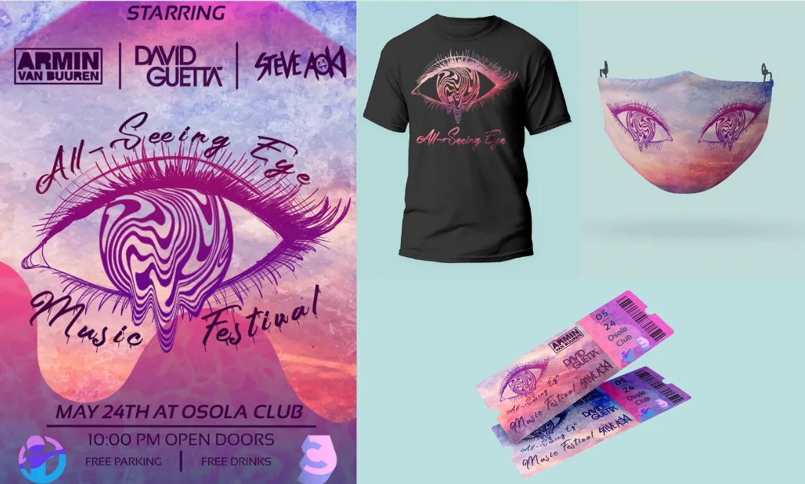

Sobre mim
Olá, sou a Julieta
Analista de dados e designer UX/UI, licenciada em Engenharia Multimédia e com especialização em Business Intelligence.
Trabalho entre duas disciplinas. A análise de dados diz-me o que as pessoas fazem num produto; a investigação e o design UX dizem-me porquê, e o que mudar.
A Engenharia Multimédia deu-me design de interação, desenvolvimento web e investigação de utilizadores. A especialização em Business Intelligence acrescentou SQL, modelação de dados, Power BI, Tableau e Python.
Anos em funções de contacto com clientes ensinaram-me a ouvir os utilizadores e a explicar as coisas de forma simples, que é quase todo o trabalho quando se apresentam dados.
Experiência e formação
Abra uma linha para ler mais.
-
2016 Inglês académicoThe Cambridge English Institute Formação
Programa de inglês académico. Hoje trabalho em inglês com nível C2.
-
2018 Consultora de vendasCars Planes Group, Córdoba, Argentina Trabalho
Venda presencial e aconselhamento a clientes. O meu primeiro trabalho em contacto direto com clientes.
-
2019–2020 Assistente de apoio ao clienteSitel, Cali Trabalho
Apoio em inglês e espanhol a clientes de uma empresa internacional; aí vi em primeira mão onde os utilizadores ficam bloqueados nos produtos digitais.
-
2020–2024 Licenciatura em Engenharia MultimédiaUniversidad Autónoma de Occidente Formação
Design de interação, desenvolvimento web, produção audiovisual e investigação de utilizadores.
-
2022 Criadora de conteúdosViveEsports, Cali Trabalho
Planeei, desenhei e editei conteúdos para as redes sociais de uma comunidade de esports.
-
2024 Certificações em investigação e design UX/UIThe Interaction Design Foundation Formação
Interação Humano-Computador, design UI/UX móvel, e estratégia e adoção de produto.
-
2024–2025 Assistente de apoio ao clienteTaskUs, Cali Trabalho
Apoio em inglês a utilizadores do produto digital de um cliente internacional.
-
2025–hoje Especialização em Business Intelligence com ênfase em Big DataUniversidad Autónoma de Occidente Formação
Modelação de dados, SQL, ETL, dashboards em Power BI e Tableau, e análise com Python. Em curso.
-
2025–2026 Community managerKhryzos & Zephyra, Cali Trabalho
Geri as redes sociais de um negócio de comida local e desenhei o seu menu para telemóvel.
-
2026 Português, de iniciante a avançadoUdemy Formação
Português de nível B2.
-
2026 Especialista em envolvimento de membrosEasyHealth, Cali Trabalho
Comunicação e fidelização de membros de um serviço de subscrição de saúde.
Trabalho de design anterior
Casos de UX e um arquivo de design, web e conteúdos dos meus anos de Engenharia Multimédia.
-
 La resiliencia de IrinaUm jogo narrativo em realidade virtual que coloca o jogador no lugar de Irina, uma jovem que enfrenta violência de género, para criar empatia através de uma experiência e não de um sermão.
La resiliencia de IrinaUm jogo narrativo em realidade virtual que coloca o jogador no lugar de Irina, uma jovem que enfrenta violência de género, para criar empatia através de uma experiência e não de um sermão. -
 NonaAntojosUm menu web para telemóvel de um negócio local de catering, pensado para que clientes com pouco tempo encontrem e encomendem o que querem em poucos toques.
NonaAntojosUm menu web para telemóvel de um negócio local de catering, pensado para que clientes com pouco tempo encontrem e encomendem o que querem em poucos toques. -

Arquivo de design, web e conteúdosDesign web, design gráfico, 3D e vídeo dos meus anos de Engenharia Multimédia.
Vamos conversar
Procuro funções em análise de dados, business intelligence e design UX/UI. A melhor forma de me contactar é por e-mail ou LinkedIn.